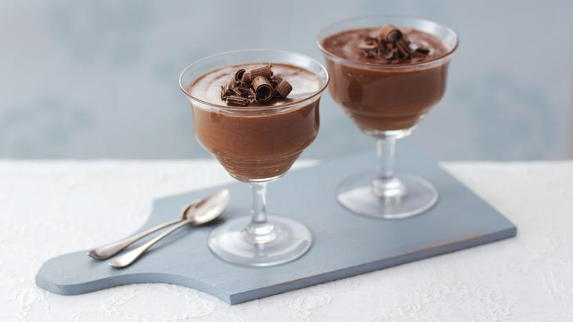

Chocolate Mousse

Description
This classic Chocolate Mousse recipe is light but with an intent of chocolate flavor. Don't be intimidated by its name, it's super quick and easy to do!
Ingredients:
- (225g.) 1 can of Milk Cream
- (200g.) 2 Nestlé Classic® Chocolate bars
- 3 egg whites
- 3 spoonfuls of sugar
Steps:
- In a saucepan in a bain-marie, heat the NESTLÉ Milk Cream.
- Add the NESTLÉ CLASSIC Chocolate and stir until a homogeneous mixture is obtained. Booking.
- In a saucepan, combine the egg whites and sugar and place over low heat, stirring vigorously, for about 3 minutes, removing the pan from the heat a few moments each minute, stirring constantly, so it doesn't cook. Transfer to a stand mixer and beat for 5 minutes or until doubled in volume. Mix lightly with the chocolate cream.
- Pour into glasses and place in the fridge for about 3 hours. Decorate with cherries, whipped cream, or chocolate shavings.
Return